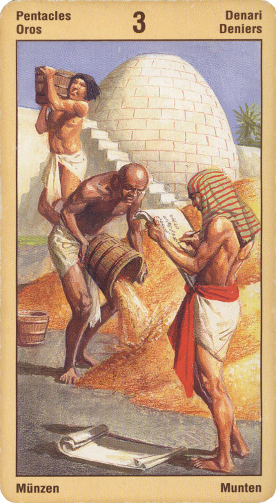

Тройка Пентаклей — Работа
Прямое положение: торговля, квалифицированный труд; эта карта может обозначать титулованную особу, знаменитость, славу.
Значение: Храма не построить в одиночку, говорит эта карта, – будь это дом, предприятие или человеческая жизнь. Карта указывает на важность объединения усилий, обмена мнениями в любом, даже самом индивидуальном деле.
На практике эта карта может означать, что для решения проблемы одних ваших усилий будет недостаточно, нужен как минимум еще один или даже два человека. Данная карта может указывать на признание и одобрение ваших успехов на пути развития навыков барда и мага.
Идеал работы гласит: делать свое дело с любовью и совершенством, так именно любовь придает труду святость. Нетворческий подход, даже к профессиональной деятельности, деформирует личность, а самолюбование своим талантом ведет к потерям результатов. Только тогда, когда работа становится творчеством, - возможны истинные достижения.
Ловушка. Делать что-либо без любви и халтурно.
В прямом положении карта символизирует мастерство, совершенство, артистизм, величие, обладание собственностью, иерархию, власть. Причем власть, основу которой будут составлять денежные интересы.
Контакты с финансовыми органами, законом.
Тройка Пентаклей может оказывать влияние и на Старшие Арканы в раскладе: благоприятное значение она усиливает (или «подкрепляет»), неблагоприятное, напротив, ослабляет. Так, появление Тройки Пентаклей рядом с Арканом «Повешенный» говорит о том, что, несмотря на необходимость чем-то пожертвовать, ваше благосостояние в целом останется на очень высоком уровне.
Успех в любой работе. Правильный выбор профессии. Иногда указывает на художественные способности. Престиж, слава. Получение надежной и длительной работы. Контракт. Человек коммуникабельный, умеющий слушать и извлекать из услышанного выгоду для себя.
В перевернутом виде означает, что вы можете оказаться без работы или же столкнуться с неадекватным работодателем, который предъявляет вам необоснованные требования. Финансовое вознаграждение, одобрение и признание - все это кажется маловероятным. В перевернутом положении тройка пентаклей символизирует упрямство, хитрость, низкое качество работы или продукции, денежные проблемы.